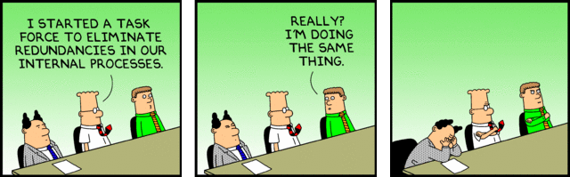

La mêlée quotidienne, aussi connu en anglais sous le nom de “daily scrum”, est le moment où une équipe se regroupe afin de prendre du recule face à son projet. Ceci permet à tous les membres de mesurer l’avancement accompli, de se mettre à jour face aux enjeux rencontrés et de s’adapter afin de réussir à livrer son projet.
De par son nom, on devine qu'en temps normal la mêlée quotidienne a lieu tous les jours. Cependant, dans le cadre de ce cours, nous prendrons en compte le fait que vous avez d'autres engagements et ne vous demanderons de faire qu'une mêlée hebdomadaire (weekly scrum).
- Ces rencontres peuvent-être fait en personne ou en ligne. Idéalement, les rencontres en personne sont privilégiées, mais non obligatoires.
- Ces rencontres peuvent avoir lieu à n'importe quelle heure du jour, malgré qu'on remarque une forte tendance vers le début de la journée dans l'industrie.
- Chaque membre de l'équipe prend la parole un après l'autre.
Lors de votre tour, mentionnez:- 🌹 Quels sont vos accomplissements depuis la dernière rencontre?
En répondant à cette question, les membres de l'équipe partage aux autres progrès, où ils sont rendus dans l'avancement de leur tâche assignée. De plus en partageant la tâche accomplie, cela peut donner aux membres de l'équipe un sentiment d'accomplissement.✨
Si certains membres de l'équipe travaillent sur des éléments qui ne sont pas alignés avec les objectifs, c'est le moment de le souligner en groupe et de réaligner le tir pour chacun.👨⚖️ - 🚀 Sur quoi prévoyez-vous travailler d'ici la prochaine?
Aide votre équipe à se synchroniser afin que personne n'accomplisse la même tâche en même temps.
Permet aussi de planifier les tâches à venir.
Par exemple, Garfunkel prévoit faire l'intégration du menu dans WordPress d'ici le prochain cours. Simon peut donc planifier débuter son habillage CSS dès ce moment. - 🌵 Qu'est-ce qui vous empêche d'avancer en ce moment?
Donne de la visibilité à votre équipe sur vos obstacles. Peut-être un coéquipier peut-il vous aider? Peut-être est il temps de laisser cet élément de côté si vous bloquez depuis longtemps, etc. - 🎉 Qu'est-ce qui vous motive en ce moment sur le projet?
Ce point est optionnel, mais est encouragé. Par exemple: un coéquipier vous a débloqué sur une tâche, vous avez compris un concept intéressant, vous, vous sentez en confiance pour une démo, un élément qu'a ajouté un collègue améliore grandement le site. Soulignez ces petites victoires!
- 🌹 Quels sont vos accomplissements depuis la dernière rencontre?
- Le PO (Product Owner) est aussi sensé profiter de cette rencontre afin de s'assurer que les cartes du tableau sont à jour en fonction de ce que les membres de l'équipe mentionnent. Si ce n'est pas le cas, il doit leur rappeler de les mettre à jour.
Chaque personne doit être à l'heure. Une mêlée est censée être rapide, il est facile de doubler son temps si une ou plusieurs personnes arrivent en retard.
L'équipe doit être focusée sur la mêlée. Personne ne doit faire autre chose en parallèle (consulter son cellulaire, jouer à un jeu, etc.).
Votre tour de parole ne sert pas à informer vos collègues sur votre vie personnelle (vos plans pour le week-end, l'anecdote la plus récente concernant votre animal de compagnie, etc.). Tenez-vous-en au projet.
Un tour de parole devrait durer 1 à 2 minutes par personne. Si un point déborde, planifiez une rencontre afin de discuter en détail de ce point ou attendez à la fin de la mêlée avant d'aborder à nouveau le sujet afin de libérer les personnes non impliquées directement.
Le scrum master dirige la mêlée, lorsqu'une des règles générales est enfreinte, celui-ci doit ramener son équipe à l'ordre.
- 🌹 Éléments terminés
- 🚀 Sur quoi comptez-vous travailler
- 🌵 Problèmes rencontrés
- 🎉 Ce qui vous motive en ce moment/félicitations
Une personne peut avoir plusieurs éléments d'une même sorte.
Par exemple:
🌹 Héros de la page d'accueil.
🌹 Déploiement en ligne.
🚀 Commencer le pied de page.
🌵 Notre version du logo est pixelisée.
🌵 On charge actuellement deux fois GSAP?
🎉 On a survécu à la démo!
Lors de votre message confirmant votre nom d'équipe, le rôle de chacun des membres et de votre choix de clients, écrivez-moi le jour de la semaine et l'heure à laquelle vos mêlées auront lieu.